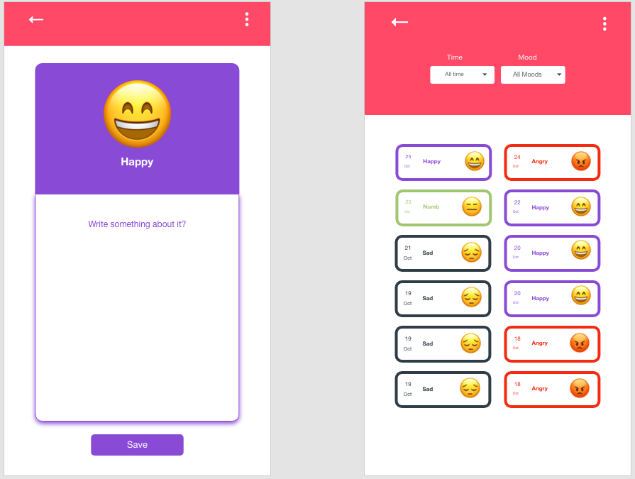
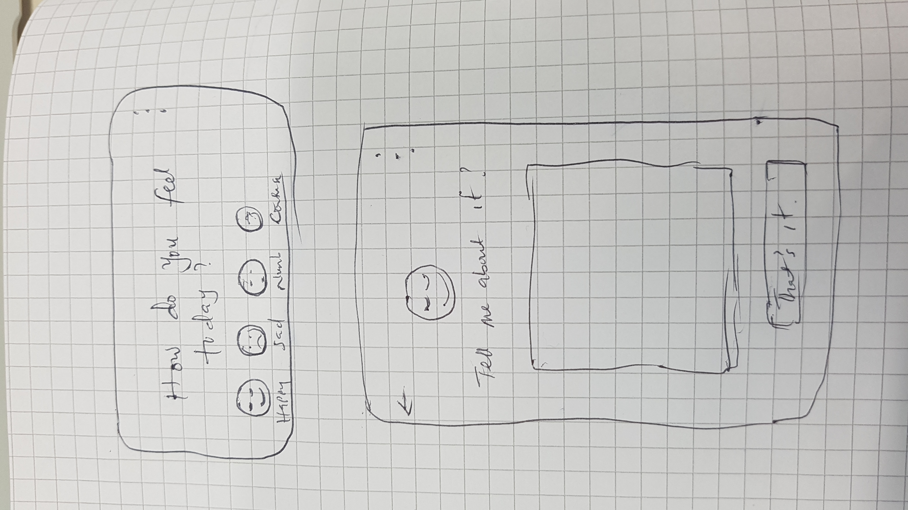
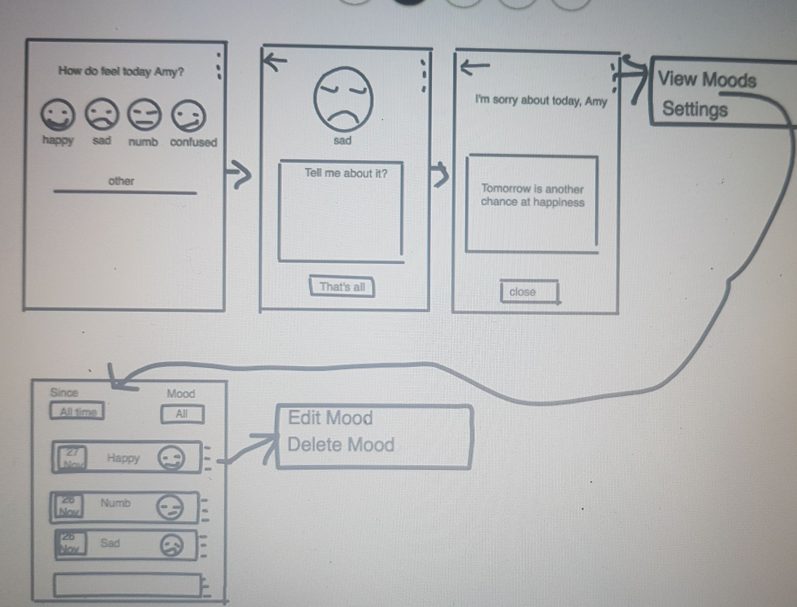

Mood Diary
Design Process
1. Research
- Target Audience: Millenials
- Method: Interviews and using google forms to gather remote data
- Inquiry: The following line of questioning was explored
- How would you characterize your moods?
- How do you manage them
- Do you think tracking them can help?
- Do you keep a diary
- What are your pet peeves about keeping a diary
2. Analyzing Data - Persona
Analyzing the data, I came up with a persona that bests represent the users.

3. Use Case Scenarios
To understand how to fit in user requirements gotten from Persona into the project, I came up with several Use Case Scenarios that fit into user's goals for all tasks and what the system's response should be.

4. Task Flow
To understand how users will perform each task, I listed all possible tasks involved and designed a task flow.

Sketching
Now that I understand the major tasks involved, the user goals and objectives, I sketched some solutions using a paper and a pen and improved on it using Invisionapp freehand.
 7. Testing
I tested my sketches with the a few people from my target group to understand if I have captured their need and solved the problem.
8. Prototyping / Final Design
With the result of the test, I came up with a prototype. Every so often I change a few things from new insights gotten from potential users. Here is the design as it is now on Invisionapp